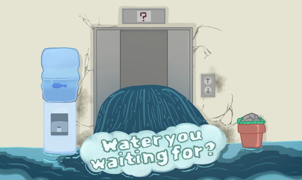

Mr.Nubbs
Concept Artist - Illustrator
Projects

Welcome to "Water You Waiting For?" - a hilarious first-person narrative game with puzzle elements.
You play as someone on the job hunt on their way to an interview, but things take a turn for the worse when they find themselves trapped in a flooded building. The only way out is to make it to ground level/exit, but the water levels are rising fast, and time is running out. Can you solve the puzzles and escape before it's too late?
Each level represents a different floor of the building, but that's not all - the eccentric characters you meet along the way are more worried about other things than the flood. These quirky characters provide comic relief and add to the game's unique charm.
With its comedic storyline, absurd puzzles, and entertaining characters, "Water You Waiting For?" is a game that will keep you laughing and engaged from start to finish. So water you waiting for? Dive into the hilarity and see if you have what it takes to survive the flood!